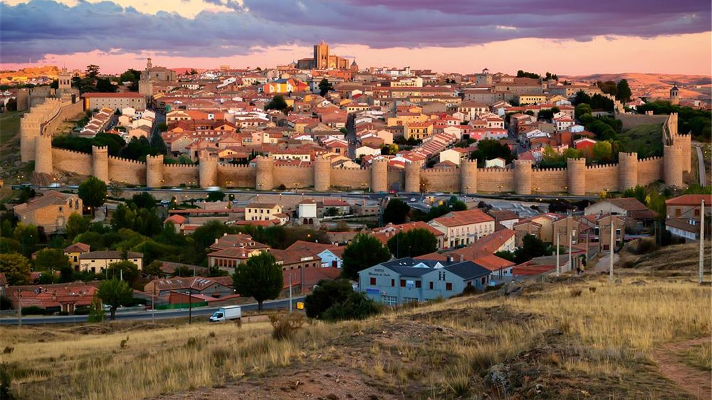
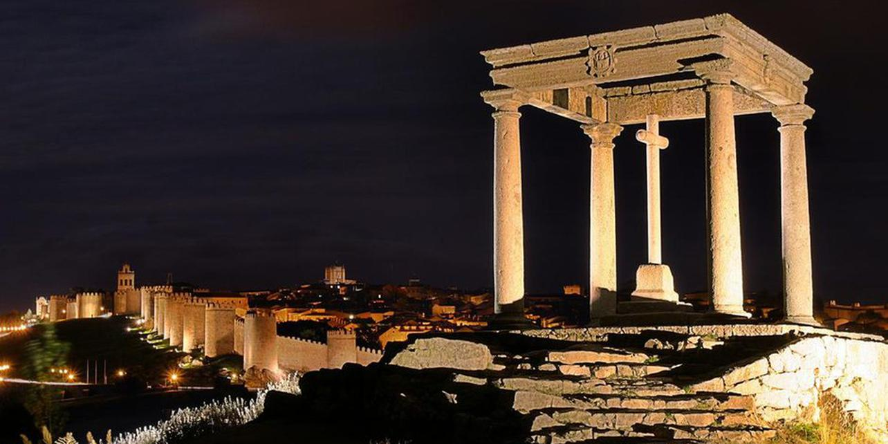

| Provincias | |
|---|---|
| León | |
| Zamora | |
| Salamanca | |
| Soria | |
| Segovia | |
| Palencia | |
| Burgos | |
| Valladolid |
Ávila es una provincia del centro de España perteneciente a la comunidad autónoma de Castilla y León. Su capital es la ciudad de Ávila y está formada por 248 municipios. Su relieve está marcado por la presencia al sur del Sistema Central, que la divide en dos zonas: la mayor parte del territorio abulense se ubica en la submeseta norte, si bien incluye también una franja al sur de la sierra de Gredos. Ávila, que limita con Valladolid, Toledo, Cáceres, Segovia, Madrid y Salamanca, es una de las provincias menos pobladas del país, con 158 698 habitantes (INE 2018).
La provincia, que tiene una extensión de 8051,15 km², está situada al sur de la comunidad autónoma de Castilla y León. Limita con las provincias de Madrid, Toledo (Castilla-La Mancha) y Cáceres (Extremadura), aparte de con las provincias castellano y leonesas de Salamanca, Segovia y Valladolid también Ávila tiene 167 015 habitantes y 27,75 por kilómetro cuadrado.
Ávila es una ciudad y municipio español, situado en la provincia de Ávila, en la comunidad autónoma de Castilla y León. Es capital de la provincia homónima y de la comarca de Ávila —que comprende el Valle de Amblés y la Sierra de Ávila—, así como sede del partido judicial número 3 de la provincia y de la diócesis homónima. Se encuentra situada junto al curso del río Adaja y se trata de la capital de provincia más alta de España, a 1131 m sobre el nivel del mar, en virtud de lo cual en su casco urbano son relativamente frecuentes las nevadas durante el invierno. La ciudad presenta un clima mediterráneo continentalizado con matices montañosos. En 2018 su término municipal concentraba el 36,38 % del total de población de la provincia.
Ávila está localizada geográficamente en la Meseta Norte de la península ibérica. Se halla situada a 1131 m de altitud, en un promontorio rocoso en la margen derecha del río Adaja —afluente del Duero— y se trata de la capital de provincia más alta de España.28 Su término municipal abarca 231,9 km², el 3 % de la superficie de la provincia.
El término municipal de Ávila —con un perímetro muy irregular— limita al norte con los de Cardeñosa, Mingorría, San Esteban de los Patos, Brieva, Tolbaños, Berrocalejo de Aragona, Mediana de Voltoya y Ojos-Albos, al este con el de Santa María del Cubillo, al sudeste con los de Navalperal de Pinares y Herradón de Pinares, al sur con el de Tornadizos de Ávila, al suroeste con el de Gemuño, al oeste con los de El Fresno, La Colilla, Martiherrero y Marlín y al noroeste con los de Bularros y Monsalupe.a El territorio del término municipal está representado en las hojas 506, 531 y 532 del Mapa Topográfico Nacional.
El suelo dentro del municipio está destinado a cinco usos fundamentales: áreas arboladas, campos destinados al cultivo de cereal, pastizales, riberas, eriales y zonas urbanizadas. La superficie arbolada del municipio se encuentra al norte de este, los cultivos de cereal a lo largo del valle de Amblés y al sur de la ciudad, mientras que los pastizales se localizan fundamentalmente en la zona este
Imágen extraida de la página "viajes.nationalgeographic.es"
Son localidades principales son Ávila, Las Navas del Marqués, El Barco de Ávila y Piedrahíta.
La zona norte, continuación de la Meseta Norte y del valle del Duero está caracterizada por un paisaje llano con suelos formados por materiales sedimentarios. Comprende la comarca de La Moraña. Los principales municipios son Arévalo y Madrigal de las Altas Torres.
La zona central donde se localizan el Valle de Amblés, el del Corneja y las zonas de montaña (sierra de Gredos, sierra de Béjar, sierra de Villafranca, La Serrota, sierra de la Paramera, sierra de Ávila o la sierra de Malagón) presenta ingentes formaciones graníticas que alcanzan su mayor altitud en el Pico del Moro Almanzor, que con 2592 metros es la cumbre culminante de la sierra de Gredos y la más elevada de todo el Sistema Central. Su clima de montaña se caracteriza por temperaturas muy bajas en el periodo invernal y veranos cortos y no muy calurosos
La zona al sur del Sistema Central que comprende la parte abulense del valle del Tiétar está caracterizada por su menor altitud y un clima más cálido. En esta parte es fácil encontrar naranjos, olivos y palmeras en los principales pueblos. Entre los municipios más importantes de esta zona se encuentran Arenas de San Pedro, Candeleda, Sotillo de la Adrada, Mombeltrán y Lanzahíta.
La provincia de Ávila, que es atravesada de suroeste a noreste por el Sistema Central, es divisoria de aguas entre la cuenca hidrográfica del Duero y la del Tajo. Entre las sierras de Gredos, y la alineación de Serrota-Paramera nacen los ríos Tormes y Alberche.
El río Tormes recoge aguas del alto Gredos, sobre todo la escorrentía del Circo de Gredos, y lleva una dirección este-oeste hasta Barco de Ávila, donde gira hacia el norte, para recibir las aguas del río Corneja en La Horcajada, camino de Salamanca para desembocar en el río Duero.
La orografía de la provincia es la causa de la diversidad en el clima de esta. En las series climáticas referidas al periodo 1960-1996 la estación meteorológica más lluviosa de la provincia fue la correspondiente al municipio de Guisando, en la falda sur de la sierra de Gredos, con un valor de 1931,1 mm. El promedio de precipitación media anual de las 79 estaciones termopluviométricas fue en ese mismo periodo de 728,6 mm, mientras que la temperatura media de estas fue de 11,8 ºC. La provincia se divide principalmente en 4 variedades climáticas atendiendo a la clasificación climática agraria de Papadakis: «mediterráneo subtropical», «mediterráneo templado», «mediterráneo templado fresco» y «mediterráneo continental»
Imágen extraida de la página "guiarepsol.com"
Dentro del término municipal de Ávila, cerca de la localidad de Bernuy-Salinero, se conserva un monumento funerario que data de finales del Neolítico a comienzos de la Edad del Bronce conocido como dolmen del Prado de las Cruces.
El nombre de la ciudad podría tener origen vetón. El helenista del siglo xix Karl Wilhelm Ludwig Müller estudió la hipótesis de que la ciudad vetona de Obila, descrita por Ptolomeo en su Geographia correspondiera con la actual Ávila; según Roldán Hervás esta relación es dudosa.La fecha concreta de su fundación es difusa, pero algunas investigaciones datarían el origen de Obila en la segunda mitad del siglo i a. C.Según algunos historiadores Obila fue uno de los muchos asentamientos vetones en la provincia, junto con los castros de Sanchorreja, Berrueco, Mesa de Miranda, Las Cogotas, El Raso y Ulaca. El asentamiento de Obila cobraría importancia con la creciente romanización del territorio, en detrimento de otros castros situados en terreno montañoso.Los vetones dejaron vestigios de su poblamiento por toda la geografía de la provincia de Ávila, destacando las estatuas de piedra conocidas genéricamente como verracos
Algunos historiadores apuntan que la actual ciudad de Ávila fue una fundación ex-novo de los romanos,quienes le darían la denominación de Abila, Obila, Abyla o Abela.La ciudad romana estaba formada por el actual casco viejo, la zona rodeada hoy día por las murallas. La antigua presencia romana en la ciudad se manifiesta a través del puente romano, la calzada y distintos mosaicos, que son algunos de los restos de esta época que han sobrevivido hasta la actualidad. La necrópolis romana estaba situada al este, más allá de la calle de San Segundo, de modo que en toda esa parte de la muralla se pueden observar piezas funerarias reaprovechadas como materiales de construcción: estelas, aras, miliarios, «verraquitos» y estelas y cápsulas cinerarias de granito, incrustados en los lienzos del muro oriental
El mayor esplendor de la ciudad bajo dominio romano tuvo lugar en los siglos i y ii d. C. En la economía de la ciudad siempre gozó de especial importancia la ganadería trashumante, en relación a las rutas que cruzaban la sierra de Gredos por el puerto del Pico y el de Tornavacas.En tiempos del emperador Constantino la ciudad de Ávila formaba parte de la provincia romana de Lusitania.La ciudad experimentó cierta decadencia a partir del siglo iii, en el contexto de una crisis generalizada en la Hispania romana a raíz de las invasiones franco-alamanas y de cierto proceso de abandono de las ciudades, en favor de las villae,como los cercanos ejemplos de la El Vergel en San Pedro del Arroyo y Pared de los Moros en Niharra. Una epidemia de peste, iniciada alrededor de 250-252 d. C., diezmó a la población de la ciudad durante veinte años.
No existen muchos datos de Ávila bajo dominio musulmán, cuyo nombre árabe fue Ābila (آبلة). En el año 714 la ciudad fue desmantelada por Tárik o por Muza, por lo tanto debe suponerse que en ese momento estaba amurallada.Lo único que parece seguro es que la ciudad se convirtió en un punto estratégico, siempre deseada por árabes y cristianos como enclave defensivo, y que los enfrentamientos por su posesión fueron permanentes. Hubo incursiones de varios reyes cristianos en la ciudad después de la ocupación musulmana, pero no llegaron a asentarse. Alfonso I llevó a cabo varias expediciones en territorio musulmán, en primer lugar en Galicia en el año 742 y posteriormente una campaña por el centro peninsular, en la que cayeron ciudades como Salamanca, León, Zamora, Segovia o la propia ciudad de Ávila. Las correrías de Alfonso I tuvieron como límite sur la sierra de Guadarrama.Estas campañas militares no tenían como objetivo la ocupación de las ciudades, sino la intención de destruir las defensas, recaudar botín y, aprovechando que los pobladores cristianos de la ciudad seguían al rey en su repliegue, obtener pobladores para las tierras ocupadas y guerreros para la defensa de los reinos cristianos.
A finales del siglo xi Alfonso VI de León encargó a su yerno Raimundo de Borgoña la repoblación del centro de la península.8081 Con el fin de proteger Toledo procedió a repoblar y cercar las ciudades de Salamanca, Ávila y Segovia
Durante el reinado de los Reyes Católicos, en la segunda mitad del siglo xv, y de Carlos I y su hijo Felipe II, ya en el siglo xvi, la ciudad volvió a renacer gracias a las idas y venidas de la corte.Ávila prosperó y la provincia fue testigo del nacimiento de varios personajes religiosos, escritores y consejeros espirituales como fueron Teresa de Cepeda y Ahumada —más conocida como Santa Teresa de Jesús—, nacida en la capital, y San Juan de la Cruz, que nació en la localidad de Fontiveros. Su concejo fue uno de los principales organizadores de la Guerra de las Comunidades y en ella se formó la primera Santa Junta
La ciudad de Ávila fue saqueada por los franceses durante los días 4, 5, 6 y 7 de enero de 1809, por orden del mariscal francés Lefèvbre. Las tropas francesas desvalijaron varias iglesias de la ciudad, además de casas particulares, y tuvo lugar el incendio del matadero de la ciudad.119 A principios del siglo xix las carreteras que comunican la ciudad con el entorno eran de muy mala calidad, aunque a mediados de siglo se mejorarían sustancialmente las que comunicaban a Ávila con Madrid —por El Espinar— y la del puerto del Pico
Durante la dictadura franquista se intensificó el proceso de despoblación de la provincia que afectó, necesariamente, a la ciudad. En 1956 se instaló en la ciudad la fábrica de Fadisa, dedicada a la fabricación de furgonetas bajo licencia Alfa Romeo. El 18 de marzo de 1977 Ávila incorporó a su término municipal los extintos municipios de Aldea del Rey Niño, Alamedilla del Berrocal, Narrillos de San Leonardo y Vicolozano; y el 25 de enero de 1977 a Urraca-Miguel y Bernuy-Salinero.En 1996 se fundó en la ciudad la Universidad Católica de Ávila.En diciembre de 2004 hubo un atentado de la banda terrorista ETA en la ciudad, al estallar una pequeña bomba de 1 kg de amonal en los aseos de una cafetería abulense de la calle Reyes Católicos, que causó daños materiales en dicho establecimiento y en otro comercio aledaño
La participación de Ávila en la sociedad española ha sido bastante reducida a lo largo del siglo xx. A pesar de ello la ciudad ha servido como lanzamiento para las carreras de diversos políticos de ámbito nacional. Ya en el siglo xix, Mariano José de Larra obtuvo un escaño en las Cortes al presentarse por Ávila. Del mismo modo los expresidentes del Gobierno de España Adolfo Suárez —que fue elegido en 1967 procurador en Cortes en Ávila— y José María Aznar —que salió elegido diputado en las Cortes por Ávila en 1982—,así como los exministros Agustín Rodríguez Sahagún,133 Agustín Díaz de Mera y Ángel Acebes, también comenzaron su andadura política en la ciudad.
El principal museo de la ciudad es el Museo de Ávila, inaugurado en 1911. En el año 1968 adquirió identidad de Museo Provincial. Está gestionado por la Junta de Castilla y León desde 1987. El museo consta de dos localizaciones: la Casa de los Deanes, un palacio renacentista del siglo xvi que funciona como sede principal y la iglesia de Santo Tomé, levantada originalmente en el siglo xii, que se utiliza como almacén visitable. Las colecciones se engloban en tres grandes secciones: una representativa de la cultura rural de la provincia, otra que recoge piezas halladas en territorio abulense desde la Prehistoria hasta el siglo xix y finalmente una dedicada exclusivamente a piezas arqueológicas encontradas en excavaciones urbanas de la ciudad de Ávila
En el interior de la catedral de Ávila, está instalado el museo de la Catedral, que alberga una exposición de arte religioso.En el convento de la Encarnación también existe una exposición permanente, que muestra diversos testimonios históricos de Santa Teresa de Jesús así como diversas piezas de arte religioso. También conserva piezas relativa a la vida y obra de San Juan de la Cruz.En la cripta del convento de Santa Teresa se localiza museo de Santa Teresa, que expone la obra y vida de la santa, así como diversas piezas de arte religioso
En el interior del monasterio de Santo Tomás se mantienen varios museos, como el de Arte Oriental y el de Ciencias Naturales. El museo de Arte Oriental fue inaugurado en el año 1964, está situado en el tercer claustro del monasterio de Santo Tomás y alberga una colección variada de piezas de Japón, Vietnam, Filipinas y China.El de Ciencias Naturales alberga una colección de ejemplares zoológicos que formaban parte del antiguo gabinete de historia natural de la orden dominicana del monasterio
La ciudad cuenta así mismo con el museo Caprotti, ubicado en el palacio de Superunda,que alberga la obra del pintor italiano Guido Caprotti, afincado en Ávila desde 1916.
Existen igualmente diversas salas de exposiciones, como la sala del Agua, la sala del Torreón de los Guzmanes, la sala de la Diputación y la sala del Episcopio.Durante el año 2004 la catedral acogió la exposición Testigos de la fundación «Las Edades del Hombre», con lo mejor del arte sacro castellanoleonés.Esta exposición se prolongó a lo largo de 223 días y recibió un total de 859859 visitantes.Durante el año 2006 se llevó a cabo la exposición «Las dos orillas», conmemoración del V centenario de la muerte de Cristóbal Colón.Durante el verano se puede acceder a visitas nocturnas a la muralla, que son guiadas y teatralizadas los fines de semana. En estas se cuenta parte de la historia de la construcción de las murallas y de la ciudad.
Dos de las figuras claves en la historia de Ávila son las de los místicos del siglo xvi Santa Teresa de Jesús y San Juan de la Cruz, que pasaron buena parte de su vida en la ciudad y en la que escribieron parte de su obra literaria.
La escritora irlandesa Kate O'Brien escribió numerosas obras en las que abordaba la temática de la ciudad abulense. En Adiós, España (1937) dedicó un capítulo a la ciudad334 y en su novela Mary Lavalle (1936) también aparecen referencias al paisaje nevado de Ávila en invierno.O'Brien continuaría con las alusiones a la ciudad en su obra Esa Dama (1946) para finalmente en 1951 escribir Teresa de Ávila, una biografía de Santa Teresa de Jesús.Ávila fue lugar de veraneo para la escritora hasta que se desató la Guerra Civil Española.La escritora volvería más tarde a la ciudad, para residir durante medio año, entre 1961 y 1962, en el hotel Jardín
Video extraido del canal de Youtube "BRUNO COCA ARENAS."
Parque Regional de la Sierra de Gredos
Hogar de la cabra hispánica, es además uno de los entornos más interesantes en cuanto a biodiversidad de toda Europa.Su paisaje montañero se presta a diferentes actividades; la más popular es el senderismo y la ruta que permite alcanzar el Circo de Gredos. Aquí tienes información sobre esta ruta.Pero la naturaleza de la sierra da para mucho más, así que podrás realizar recorridos ornitológicos, micológicos o que tengan como centro a la popular cabra montesa. Infórmate aquí. También podrás dar paseos a caballo.El Parque Regional de la Sierra de Gredos es el lugar predilecto para los que buscan escapar de las ciudades y entrar en contacto con la naturaleza de primera mano, no sólo para contemplarla, sino para disfrutarla a través de actividades de turismo activo.
Cuevas del Águila
Surgidas de ríos subterráneos hace de 500 mil a 1 millón de años (los expertos no terminan de ponerse de acuerdo), estas cuevas tienen una profundidad de 50 metros y un recorrido de 1000 metros.Estratégicamente iluminadas, podrás apreciar el colorido de la roca caliza y sus numerosas estalactitas y estalagmitas.
Las fiestas patronales de Ávila son las de Santa Teresa de Jesús, el 15 de octubre, y San Segundo, el 2 de mayo. Las fiestas de verano de la ciudad tienen lugar durante la segunda quincena de julio.También es patrona de Ávila la virgen de Sonsoles
La Semana Santa en Ávila es considerada como de Interés Turístico Regional desde el año 1993 y como de Interés Turístico Nacional desde el año 2005. Desde 2014 hasta la actualidad es considerada como de Interés Turístico Internacional
Mercado medieval: Durante el fin de semana posterior al primer viernes de septiembre de cada año tiene lugar un mercado medieval en el casco histórico de la ciudad. Se puede disfrutar de una ambientación, espectáculos y gastronomía propias del medievo. El lema bajo el que se celebra de «El mercado de las tres culturas» está referido a las principales culturas que han estado involucradas en la historia de la ciudad: cristiana, judía y musulmana.Durante esta semana parte de la ciudad y muchos de sus habitantes se visten de época y se llevan a cabo pasacalles y espectáculos durante el día y la noche, en distintas zonas temáticas que cuentan con sus respectivas denominaciones: Barrio judío, Zoco árabe, Campamento militar/Arqueros, Mercaderes cristianos, Campamento medieval, Rincón infantil, Episcopio o Cetrería
Festival de Teatro de Calle y Artes Circenses. Tiene lugar en temporada veraniega y se llevan a cabo distintos espectáculos callejeros, de índole gratuita
Arteávila. Se trata de un certamen anual de artesanía. Tiene lugar durante el mes de agosto en el paseo del Rastro y es organizado por la Asociación de Artesanías Varias de Ávila (ADAVA)
E Boca. Muestra de vino y productos de la tierra, está promovida por la Asociación de Sumilleres de Ávila (ASA), y en el año 2013 se desarrolló durante el mes de febrero.
Feria del Libro Antiguo y Ocasión. Certamen ferial anual, es organizado por la Asociación del Libro Viejo y Antiguo de Castilla y León (ALVACAL). Tiene lugar en la plaza de Italia o en el paseo del Rastro.
Ávila cuenta igualmente con una plaza de toros de segunda categoría. Está situada en el sur de la ciudad, junto al estadio Adolfo Suárez, y cuenta con un aforo de 8491 espectadores.Desde el año 2013 es gestionada por la empresa «Por Naturales S. L.», que sustituyó en este cometido a «Servicios Taurinos del Duero, S.L.».En verano de 2013 torearon en la plaza figuras como Julián López El Juli o Miguel Ángel Perera.
Procesión de la Pasión y Santo Entierro
Video extraido del canal "Semana Santa entre Murallas Ávila."
Gastronomía de la provincia de Ávila.
Son característicos en las mesas abulenses los platos de judías del Barco, el chuletón de Ávila, las patatas revolconas y las yemas de Santa Teresa. También son típicos de la ciudad el hornazo, bollo de pan relleno de chorizo, tocino, lomo y huevo, las mollejas de ternera o el cochinillo (denominado tostón asado), cuchifrito en la capital y al horno en Arévalo.
Yemas de Ávila. Este dulce típico de la ciudad es fabricado en la pastelería tradicional «La Flor de Castilla» con el nombre de «Yemas de Santa Teresa». El resto de pastelerías de la ciudad también lo fabrican pero bajo la denominación genérica de «Yemas de Ávila» o simplemente «Yemas». Se elaboran como su propio nombre indica a partir de la yema de huevo.
Chuletón de Ávila. Se trata de un gran chuletón de ternera a la parrilla y poco hecho. Se puede disfrutar en cualquier punto hostelero de la ciudad. El chuletón es de ternera Avileña, raza autóctona de ejemplares negros y de excelente carne. La carne de Ávila tiene indicación geográfica protegida.